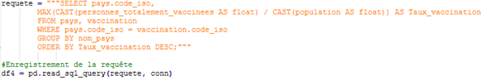
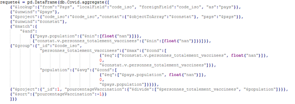

NoSQL Database
This project was part of a course on the basics of Big-Data databases. The goal was to start from a relational database and convert it into a MongoDB database. We first had to study the original database's structure and content.
Unlike a traditional database, document-based databases, like MongoDB, store the data as collections of documents. Data is saved in JSON format, which keeps a clear structure and makes it easier to merge documents. In order to convert it into a MongoDB database, we had to think carefully about how many collections we would need and how the JSON files should be structured. The database used for this project was about how various countries managed Covid-19. Each table covered a different part of the crisis management: vaccinations, number of hospital stays, number of deaths, as well as basic country statistics such as population, continent, or GDP. We decided to structure the MongoDB database using two collections: one to store the economic, geographic, and social information for each country, and the other to store daily Covid statistics for each country. In this structure, the primary key between the two collections was the country name.
The migration was done in Python, using the Pymongo library to connect to and manage the MongoDB database locally. The data was first cleaned, since some dates needed fixing, and some statistical measures were calculated. To finish the conversion, SQL queries were written to put the data into a DataFrame. The data was then processed to match the format needed for the collections of the new database.
In order to check that all had worked correctly, 13 test queries were run. They compared the results of two similar queries: one SQL query on the original database, and the equivalent Pymongo query on the new database. The results matched, which confirmed that all had worked properly. A dashboard was then built to visualize the data.
Skills gained:
- Using, storing, managing, and creating a document-based NoSQL database
- Writing Pymongo queries
- Deepening my knowledge of Python and SQL
- Understanding the issues involved when migrating to Big Data
Illustrations

SQL query that return the percentage of fully vaccinated people in the population, for each country, sorted in descending order

The same query in MongoDB